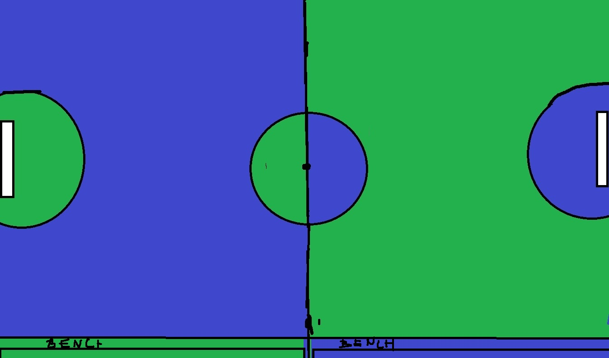

*The team which plays with hand must use their feet while defending. They can't use their hands.
*If a player fouls in penalty area, the other team will be awarded a penalty kick. But the penalty kick must be used with foot only.
*Each team can make 3 substitutions in a match.
*Only team captains can object to referee's decisions. Otherwise, the players will be penalized by yellow cards.
*At the end of the match, the team with the most goals wins. If there is a tie, the match will go to extra time. If there is still a tie after extra time, the match will be decided by penalty shootout. But this is just for the finals and two legged matches. In league matches, if there is a tie, both teams will get 1 point and if there is a win, the winning team will get 3 points and the losing team will get 0 points.
The managers can't step on the pitch. Otherwise, they will be penalized by a

*The blue part of the pitch is the half-field of handball team and the green part is football teams. It switches every round. So in the first round, the team who starts with hand will play in the blue half and the team who starts with foot will play in the green half. But in the second round, they will switch. The team who starts with hand will play in the green half and the team who starts with foot will play in the blue half. And this switching continues every round.
*The goal of the game is to score more goals than the other team. The team who plays with hand must score in the football goal and the team who plays with foot must score in the handball goal.
*The goal size is same with both teams